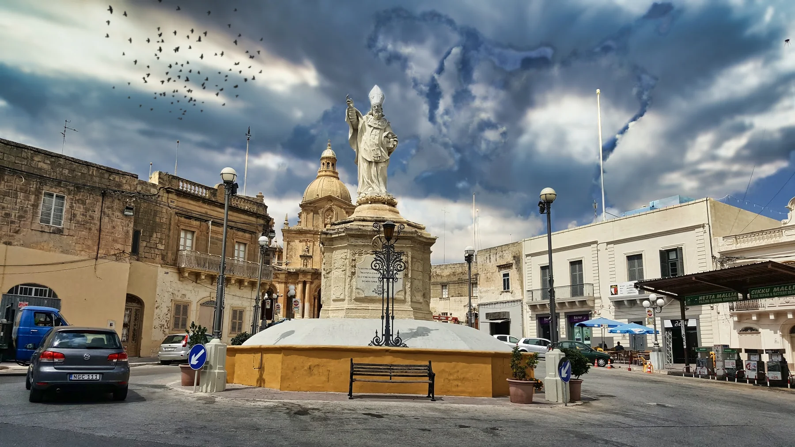

Check gradients, pavements, crossings, parking and evening activity from the building entrance. A Siġġiewi label alone does not prove proximity.
SIĠĠIEWI · START WITH THE VILLAGESquare first.
Square first.
Exact street next.
Siġġiewi has a clear village centre and a much wider rural setting. Read the address before turning either picture into a promise about a home.

ONE LOCALITY, TWO SCALES
Read the centre and the wider limits separately.
The Local Council places Siġġiewi in Malta's Western Region. Its square, parish church and civic services give the centre a clear everyday focus, while locality descriptions and heritage sites extend beyond that compact core. A listing needs its actual public address context before either scale is applied.
Homes beyond the centre need their own grocery, transport and return-route check. Rural context does not guarantee silence, views or public access.
Żebbuġ, Qrendi and Mqabba are separate choices. Sites described as “limits of Siġġiewi” are not automatically part of the residential core.
A place to orient yourself, not a themed route.
The council lists Saint Nicholas Church, the Old Church, St John Church, St Mark Chapel and other chapels. They are useful reference points for understanding the village, but the directory does not prove a connected walking trail, public opening times or step-free access.
Council churches and chapels ↗The centre carries practical anchors.
Servizz.gov lists a hub in the Civic Centre on Triq San Nikola. Primary HealthCare lists a Siġġiewi Community Clinic and assigns residents to Qormi Health Centre. Services and schedules are current-check items.
Servizz.gov hubs ↗EVERYDAY CHECKS
Use actual destinations, then test the journey.
These sourced examples establish useful local context. They are not rankings and do not claim that any destination is nearest to a property. Check current hours, access, stock and appointments directly.
SPAR Siġġiewi
SPAR publishes a dedicated Siġġiewi store page for everyday groceries. The operator page is the place to recheck current hours.
SPAR operator page ↗MySupermarket & MyConvenience
The Convenience Shop group lists a MySupermarket and two MyConvenience branches under Siġġiewi.
Operator locations ↗Servizz.gov hub
The government directory places the hub at 18, Civic Centre, Triq San Nikola. Services and appointment needs should be confirmed before visiting.
Government directory ↗Community clinic
Primary HealthCare lists Siġġiewi Community Clinic at 18 St Nicholas Street and the locality within Qormi Health Centre's catchment.
Clinic directory ↗FOOD WITHOUT A RANKING
Two different reasons to stop.
One address sits directly on Pjazza San Nikola; the other is tied to the Limestone Heritage setting. Neither example is a claim that the venue is close to every Siġġiewi listing.
Marilù's
DINE Malta lists the venue at 66/68 Pjazza San Nikola and links to its contact and menu surfaces. This is a location example from a dining directory; confirm the current menu and opening arrangements directly with the venue.
DINE Malta listing ↗il-Kċina
The operator places the restaurant within the Limestone Heritage site and describes Mediterranean food with indoor and outdoor seating. Check the current service window before travelling.
il-Kċina operator page ↗No shortcut through fields.
This edition draws no locality boundary, property pin, straight-line path or walking route. A future journey claim must use routed geometry from the exact permitted origin and destination. Bus schedules, live car traffic and taxi-price observations remain separate sources.
Open the village overview only when you need it.
The map frames Siġġiewi and its surrounding labels for orientation. It deliberately draws no boundary, route, distance, travel time or listing location and loads from OpenStreetMap only after your click.
Siġġiewi Local Council locality · Council churches and chapels · Servizz.gov hubs · Primary HealthCare community clinics · Health-centre catchments · SPAR Malta · The Convenience Shop locations · DINE Malta — Marilù's · il-Kċina operator page
No ranking, fixed opening hours, property-specific distance, guaranteed view, parking claim, accessibility promise or locality-wide journey time is implied.